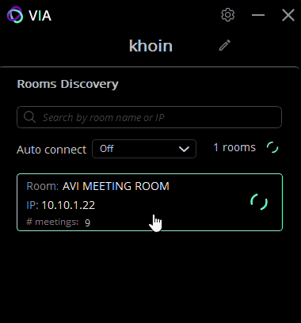

Vuốt để bắt đầu.
Nếu thiết bị chưa bật vui lòng bật cầu giao rack và ổ cắm và chờ 5-10 phút
Kết nối máy tính và điện thoại vào mạng của phòng họp
Chọn phòng họp lớn
Chọn trình chiếu không dây 1 và ấn áp dụng
Bật màn hình TV và làm theo hướng dẫn trên màn hình, truy cập vào địa chỉ 10.10.1.22
Người dùng có thể chọn trình chiếu qua browser hoặc qua app, thao tác của 2 cái này tương tự nhau

Sau khi tải và cài đặt app VIA vui lòng chọn cuộc họp
App VIA sẽ yêu cầu code bạn có thể tìm thấy code này ở góc chính giữa và góc trái của màn hình
Sau khi nhập code bạn có thể ấn nút "Share" để bắt đầu chia sẻ màn hình